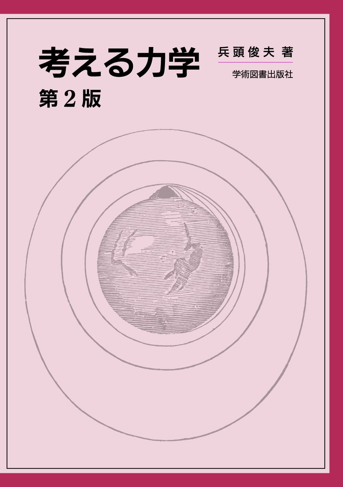
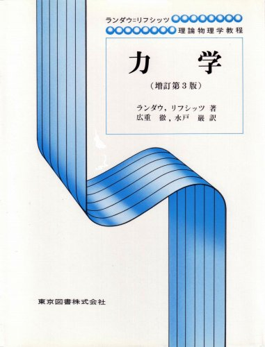

力学
力学のおすすめ参考書です。大学の物理学の世界へようこそ。

考える力学 兵頭俊夫著
大学の物理学を学びたい。そう思った際にはぜひこの本から入ることをお勧めする。力学で使う数学はこの本の中で全て準備してくれるし、その説明も易しくわかりやすい。また、コラムには身の回りの物理学の話が書かれており、難しい物理学の世界への入り口を少しでも楽しいものにしてくれる。最後には解析力学の内容も書かれてあり、大学で学ぶ力学を幅広く学べる良書。

力学 ランダウ=リフシッツ著
嫌いな人に「力学のおススメの入門書教えて」と言われたらこの本をおススメすると良い。この世にある力学の教科書の中で最も難しい本の一つだからだ。しかしその内容は素晴らしく、一行一行の内容が病的に深い(そしてその一行を読むのに数時間かかるのは内緒)。多くの物理学徒を『力学の虜』にした歴史的名著。
詳解力学演習
院試対策のために購入したが、面白い問題があまりにも多く、完全にオーバーワークになってしまった禁断の書。正しい試験対策本としての使い方はおそらく「過去問を見て、この本の中から類似問題を探す」です。学部4年になって今一度古典力学の深遠さに気付かされた思い出の1冊。
よくわかる解析力学 前野昌弘著
解析力学についてとにかく丁寧に説明されている教科書。上のランダウ=リフシッツでは1ページ目から解析力学が説明されているが、本書では変分などの準備をゆっくりと経て、解析力学が本格的にスタートするのはなんと83ページ目である。同じ解析力学の教科書とは思えない！この本は初学者がつまづきやすいポイントがしっかり説明されているため、初めて読む本としておすすめできる。